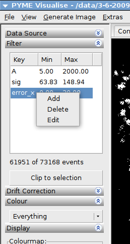

VisGUI - Visualising Localization Data Sets¶
Installing the standalone viewer¶
If you’re using the standalone py2exed version, no installation is necessary - simply unzip and run VisGUI.exe. You should get an image like that shown below.

Otherwise follow the PYME Installation instructions
System Requirements¶
VisGUI will run on relatively low spec machines (I’ve had it running on an old single core 1.6GHz laptop with 1GB of RAM), but for an enjoyable user experience I’d recommend at least the following:
- ~2GHz Core 2 Duo
- 2 GB Ram
- Hardware OpenGL support
- WinXP - I’m pretty sure it’d run on 2K fine, not so sure about Vista or Win7
- Wheel mouse - a wheel mouse is required for zooming in the interactive display
If you’re wanting to get peak performance out of it, the factors limiting performance are likely to be memory bandwidth, graphics card performance, and the CPU, in that order.
Importing Data¶
To import data, simply use the File->Open menu command, launch VisGUI from the command line with the filename as an argument, or right click on a data file in windows explorer and select Open With [1]
| [1] | you’ll need to tell windows where to find VisGUI the first time you do this. |
Three data formats are currently supported - our custom .h5r format, tab delimited text, and matlab .mat files. In each case, the data should take the form of a table of values where each row corresponds to a detected single molecule event, and each column corresponds to one of the fitted parameters such as, for example, x position, y position, or amplitude. All position values are assumed to be in nm. The table must contain the x and y positions of the localised single molecule events, and may contain any other pertinant parameters. It is suggested that at least folowing parameters should also be included: the time/frame number at which the event was detected, the event amplitude, event width, and the estimated localisation error.
Once loaded the columns are accessed by semi-descriptive names, with the names x, y, t, A, sig, error_x being recognised by the program as the previously introduced parameters. :note: the program will not work if either x or y is undefined
.h5r format¶
Loading .h5r formatted files is pretty much a no-brainer. All parameters such as column names are read out of the file for you, as well as acquisition meta-data.
Tab formatted text¶
When importing tab formatted text files, you have to define the column names yourself, using the import dialog. You can also specify the column names within the text file to speed up this process by adding a python style comment (signified by a leading #) to the first line of the file containing a list of tab seperated column names. The dialog will still be shown for confirmation, but the correct column names should already be entered.

Matlab .mat files¶
If reading .mat files, VisGUI expects the data to be in a single array. The import dialog is a little more primitive in this case, but the same principle applies - each column needs to be given a name, and the names x and y must be defined. The names are specified by typing a comma separated list of names into the supplied box. Each of the names must be enclosed in double quotes, and there must be exactly the same number of names as there are columns.

Exploring the data¶
Having sucessfully loaded a dataset, you should see something resembling the image shown below. If you don’t see anything, don’t panic, the most common reason is that the filter is throwing all your data points away - see The Filter.

Within the viewer, the data follows a pipeline as illustrated below. The important components are described in detail in the following sections.

The Filter¶
The filter allows a valid range for each parameter to be specified, thus restricting the analysis to a subset of the point values. This enables eroneous events where, for example, the fit did not converge or the fit picked up a noise spike rather than a true fluorophore to be discarded.
The filter is controlled using the the filter pane of the sidebar(which can be expanded by clicking the icon in the right corner). Right clicking on the list gives you the option to add, and if a parameter is currently selected, edit or delete a parameter in the filterfootnote{on windows, you sometimes need to click the right mouse button 2-3 times before the menu pops up.}. Double clicking on a filter also allows the filter to be edited. Editing filters brings up a dialog as shown below. A histogram of the selected variable is displayed and the current bounds indicated by red vertical lines. These lines can be dragged with the mouse to change the filter. The filter editor (and all other histogram editors) also understand the following keys if they have focus:

| m | sets the bounds to the minumum and maximum values of the variable |
| p | sets the bounds to the 1st and 99th percentiles |
| l | toggles log scaling on y-axis |
The filter will typically come with default bounds for A (the point amplitude), sig (the std deviation of the fitted Gaussian), and error_x (the estimated error in the x position). The default values are for our setup and imaging at ~ 488 nm excitation, and are quite likely to need changing. Notably A will need changing if you’re intensity is calibrated differently, and sig will need changing when working at different wavelengths.
The filter is also used to restrict the data to a smaller spatial ROI, by adding filters on the x and y variables. Rather than manually creating and setting these filters, a selection can be made by clicking and dragging with the left mouse button in the view tab (a yellow selection rectangle should be shown), and then clicking on Clip to Selection in the filter pane. The ROI can then be cleared by clicking the same button.
Mapping & Colour¶
By default the mapping component of the pipeline simply passes the variables from the filte without change. One can however add mappings which can either define new variables or redefine existing variables. In principle arbitrary transformations, for instance rotation, are possible. There is no direct GUI control over the mapping component.
Following the mapping component there is a colour selection component. This is only important when processing ratiometric multi-colour images (see Multi-Colour), and is effectively transparent at all other times.
Interactive Display¶
The interactive display is designed to provide a quick and easy method of looking the data. There are 6 different display modes, which can be selected from the View menu. The basic operation of display window is common to all: The display can be zoomed in and out using the mouse wheel, and panning is accomplished by sooming out, and back in in a different place. Choosing the Fit item from the View menu will reset the display such that the whole image fits within the display window. A scale bar and colour look up table are displayed at the right of the image. The Display panel in the left sidebar allows the colormap and scaling to be changed (note that the histogram display works the same as those in the filter).

In addition to the Display panel, each mode may display a panel with mode-specific settings such as the Points panel. A more detailed description of the various modes is given in the following sections:
- Points Mode
- The default visualisation mode is the points mode, in which each localisation event is displayed as a point. The colour of each point can be set to any of the event variables.
- Triangles Mode
- In this mode the point positions are triangulated and the triangles displayed with an intensity inversely proportional to their area. See also Image Generation.
- Quad-Tree
- A quad tree is generated from the event data and each leaf is coloured with an intensity which is proportional to the number of points it contains, and inversely proportional to it’s size. The leaf capacity (ie the size at which a leaf will be subdivided) can be adjusted. For more info see paper.
- Voronoi Diagram
- Similar to triangulation but using the voronoi diagram of the points rather than the triangularisation. Much slower - would suggest only applying to a subset of the image data.
- Interpolated Triangles
- As for the triangle mode, the points are triangulated. The colour, however, is derived by interpolating vertex colours derived from one of the variables. Is most suited to visualising parameters which are likely to be correlated for neighbouring events, such as chromatic shift measurements.
- Blobs
- This mode attempts to segment the image into connected areas based on neighbour distances, and allows various measurements to be performed on these segmented objects. Might not work under windows.
Image Generation¶
After optimising the filter, corrected drift, and doing other sanity checks on the data, one typically wishes to generate an image. This is accomplished by choosing one of the options from the Generate Image menu. All image generation methods generate an image which matches the region currently displayed in the interactive display (View) tab. Remember that the display can be zoomed to the whole image using the View->Fit menu item.

Each method will also display a simlar dialog (but potentially with a slightly different set of options) prompting for the pixel size and any other parameters. The individual methods are described in the following:
Image Generation Methods¶
- Current
- The Current method reproduces what is currently displayed in the interactive display, at a specified pixel size. Note that only the intensity is captured and not the colour information. Whilst this is what you want in some situations, it is not universally so and a colour capture is on the TODO list.
- Gaussian
- The Gaussian method performs standard Gaussian visualisation. It defaults to using the estimated position error as the standard deviation of the rendered Gaussian, but any of the parameters can be used. Using the fitted standard deviation, sig, for example allows the easy generation of pseudo-diffraction limited images.
- Histogram
- The histogram method simply produces a 2D histogram of the point position data with the specified bin size.
- Triangularisation
This performs a Delaunay triangularisation based rendering, with the option of averaging several triangulations based on slightly jittered point positions (see Visualisation of Localisation Microscopy Data, Microscopy & Microanalysis). The variable which dictates the jitter magnitude can be selected and defaults to a measure of the distance between a point and it’s neighbours. The number of samples to average defaults to 10.
In addition to jittering, it is also possible to smooth the triangularisation by averaging several triangularisations performed on Monte-Carlo subsets of the point positions. If you want to try this out, set the multiplier for the jitter to 0 and set the MC subsampling probability to less than 1 (~ 0.2 is probably a good start).
- Quad-Tree
- The Quad-Tree method allows a quad tree (see sec:intQT,*Visualisation of Localisation Microscopy Data …*) to be rendered at a given pixel size. The bin depth setting from the Quad tree in the interactive display is used.
- 3D Histogram & 3D Gaussian
- These methods are 3D versions of the histogram and Gaussian methods for data with z information. 3D versions of the triangularisation and Quad-Tree algorithms are in progress.
Generated Images¶
After an image has been generated, it should pop up in a new window. All image windows are locked to the main view window in both position and zoom. Scrolling on any image window will thus result in a global zoom over all image windows. The colour scaling in the generated images can be adjusted selecting the View->Colour scaling menu item, which displays a small pop-up window with a histogram view.
The image viewer is designed to view multi-colour images, in which case the individual channels will appear as separate tabs, in addition to a composite tab in which the channels are overlaid. When dealing with single channel data, only one tab is displayed.
Saving images¶
The generated images have three save options, all of which can be accessed from the File menu. The one you will generally want is Save Channel which saves the entire current channel/image as a single, floating point, TIFF without any colormap or scaling applied. The other two options allow a multi-channel image to be saved as a TIFF stack [2] (Save Multi-channel), and allows for exporting exactly what is currently shown in the window (complete with colour maps, scaling, and zoom) as a variety of formats (Export Current View).
| [2] | Although this currently relies on an external program, tiffcp, and is untested on windows.} |
Extras¶
Console¶
The console tab is a functional python console embedded within the program. The pipeline can be accessed directly, and behaves like a dictionary which understands the variable names as keys [3] . A number of Matlab style plotting and basic numeric commands are accessible by executing from pylab import * (see the matplotlib webpage for more docs). After importing pylab, one can, for example, plot a histogram of point amplitudes by executing hist(pipeline['A']).
| [3] | a lot of other aspects of the program are callable/accesible from the console window, but are beyond the scope of this quick introduction |
Metadata, Events¶
The Metadata and Events tabs show metadata and event data relating to the acquisition. This is only realy useful for files saved in .h5r format as default (and probably erroneous) values are used when loading from .txt or .mat.